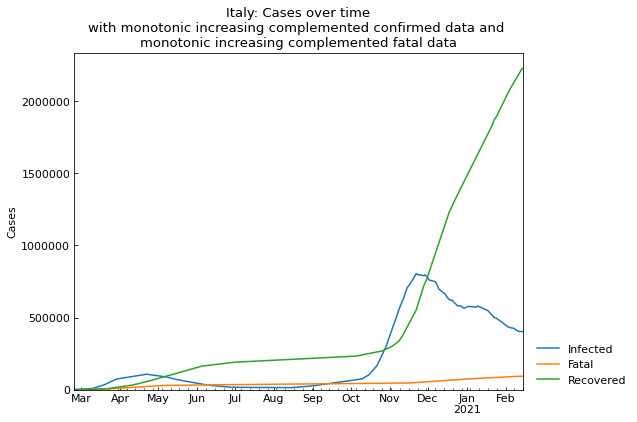

Usage (quickest version)¶
Preparation¶
[1]:
# Standard users
# !pip install covsirphy
[2]:
# Developers (Note: this notebook is in example directory)
import os
os.chdir("../")
[3]:
import covsirphy as cs
cs.__version__
[3]:
'2.4.2'
Dataset preparation¶
Download the datasets to “input” direcotry and load them.
If “input” directory has the datasets, DataLoader will load the local files. If the datasets were updated in remote servers, DataLoader will update the local files automatically.
[4]:
# Standard users and developers
data_loader = cs.DataLoader("input")
# The number of cases (JHU style)
jhu_data = data_loader.jhu(verbose=False)
# Population in each country
population_data = data_loader.population(verbose=False)
Note:
Datasets were retrieved via COVID-19 Data Hub and the citation is
Guidotti, E., Ardia, D., (2020), “COVID-19 Data Hub”, Working paper, doi: 10.13140/RG.2.2.11649.81763.
Start scenario analysis¶
As an example, we will analysis the number of cases in Italy.
[5]:
scenario = cs.Scenario(jhu_data, population_data, country="Italy")
S-R trend analysis¶
S-R trend analysis finds the change points of SIR-derived ODE parameters.
[7]:
scenario.trend()

[8]:
scenario.summary()
[8]:
| Type | Start | End | Population | |
|---|---|---|---|---|
| 1st | Past | 22Mar2020 | 30Mar2020 | 60421760 |
| 2nd | Past | 31Mar2020 | 05Apr2020 | 60421760 |
| 3rd | Past | 06Apr2020 | 10Apr2020 | 60421760 |
| 4th | Past | 11Apr2020 | 15Apr2020 | 60421760 |
| 5th | Past | 16Apr2020 | 20Apr2020 | 60421760 |
| 6th | Past | 21Apr2020 | 24Apr2020 | 60421760 |
| 7th | Past | 25Apr2020 | 01May2020 | 60421760 |
| 8th | Past | 02May2020 | 08May2020 | 60421760 |
| 9th | Past | 09May2020 | 19May2020 | 60421760 |
| 10th | Past | 20May2020 | 05Jun2020 | 60421760 |
| 11th | Past | 06Jun2020 | 11Jul2020 | 60421760 |
Hyperparameter estimation of ODE models¶
As an example, use SIR-F model.
[9]:
scenario.estimate(cs.SIRF)
<Main scenario: perform parameter estimation>
Running optimization with 8 CPUs...
11th phase with SIR-F model finished 92 trials in 0 min 16 sec.
1st phase with SIR-F model finished 50 trials in 0 min 5 sec.
2nd phase with SIR-F model finished 80 trials in 0 min 10 sec.
4th phase with SIR-F model finished 33 trials in 0 min 5 sec.
3rd phase with SIR-F model finished 72 trials in 0 min 10 sec.
5th phase with SIR-F model finished 34 trials in 0 min 5 sec.
6th phase with SIR-F model finished 28 trials in 0 min 5 sec.
8th phase with SIR-F model finished 40 trials in 0 min 10 sec.
7th phase with SIR-F model finished 118 trials in 0 min 25 sec.
10th phase with SIR-F model finished 95 trials in 0 min 20 sec.
9th phase with SIR-F model finished 132 trials in 0 min 25 sec.
Completed optimization. Total: 1 min 18 sec
Show the history of reproduction number¶
[10]:
_ = scenario.param_history(targets=["Rt"], divide_by_first=False)

Simulate the number of cases¶
[11]:
scenario.add_phase(end_date="01Jan2021")
_ = scenario.simulate()